Stepwise Refinement
Instructor: Fred Agbo
Slide by: Jed Rembold
Sept 6, 2023
Announcements
- Homework
- Problem Set 1 due on Monday night!
- You should start meeting in your section from this week!
- You should have received an email regarding your section meeting time and location
- Attending the section meeting is very important. Try not to miss it
- Polling continues today! Remember to use this link when I make it active https://www.polleverywhere.com/agbofred203
Review Question
Karel starts as shown to the right. At which beeper do they end up when the below sequence of commands finishes?
while no_beepers_present():
while front_is_clear():
move()
if beepers_present():
turn_left()
else:
turn_right()
turn_left()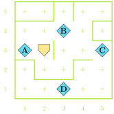
Summary So Far
- Karel can only:
move()turn_left()pick_beeper()put_beeper()
- Get info about surroundings using predicate functions
- Eg.
front_is_clear() - Inverse options exist as well
- Eg.
- Group code into reusable bundles
def function_name():
# Code to be grouped- Conditional statements
- Run certain code blocks only if a condition is true (the
elseblock is optional)
if condition_test: # Code if answer yes else: # Code if answer no - Run certain code blocks only if a condition is true (the
- Iterative statements
- Repeat code block as long as condition is true
while condition_test: # Code to repeat- Repeat set number of times
for i in range(desired_count): # Code to repeat
Stepwise Refinement
- The most successful way to solve a complex problem is to break it down into progressively simpler problems
- Begin by breaking the whole problem into a few simpler parts
- Some of these parts might then need further breaking down into even simpler parts
- The process is commonly called stepwise refinement or decomposition
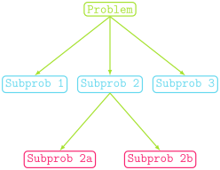
Excellent Decomposing
A good problem decomposition should mean:
- The proposed pieces should be easy to explain
- One indication that you have succeeded is if it is easy to give them simple names
- The steps are as general as possible
- Each piece of code you can reuse is one less piece of code you need to write! If your steps solve general tasks, they are much easier to reuse.
- The steps should make logical sense for the problem you are solving
- If you have a function that will work to solve a step but was designed (and named) with something else entirely in mind, adopt it for the currently needed situation
Enter the Winter
- Suppose we want Karel to usher in the Fall/Winter by removing the “leaves” from the tops of all the trees

Understanding the Problem
- What are we guaranteed by the problem?
- How will we know when we are done?
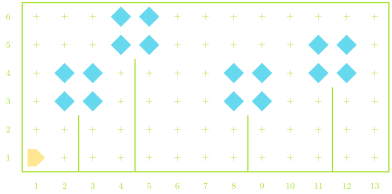
Top-Level Decomposition
- We could break this problem into two main subproblems:
- Find the next tree
- Strip the leaves off that tree
Top-Level Decomposition
- We could break this problem into two main subproblems:
- Find the next tree
- Strip the leaves off that tree
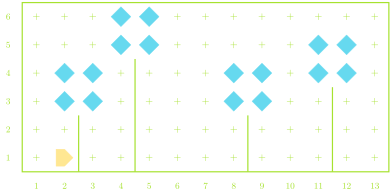
Top-Level Decomposition
- We could break this problem into two main subproblems:
- Find the next tree
- Strip the leaves off that tree
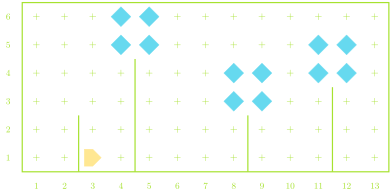
Top-Level Decomposition
- We could break this problem into two main subproblems:
- Find the next tree
- Strip the leaves off that tree
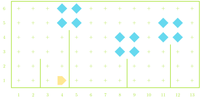
Top-Level Decomposition
- We could break this problem into two main subproblems:
- Find the next tree
- Strip the leaves off that tree
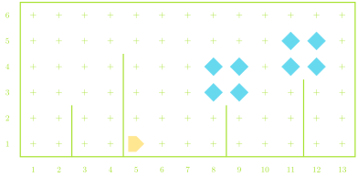
Top-Level Decomposition
- We could break this problem into two main subproblems:
- Find the next tree
- Strip the leaves off that tree
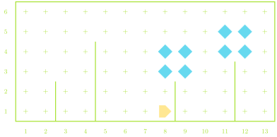
Top-Level Decomposition
- We could break this problem into two main subproblems:
- Find the next tree
- Strip the leaves off that tree
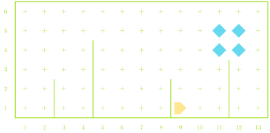
Top-Level Decomposition
- We could break this problem into two main subproblems:
- Find the next tree
- Strip the leaves off that tree
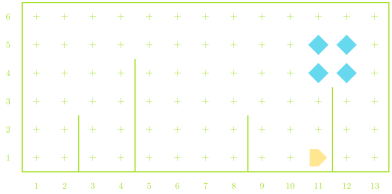
Top-Level Decomposition
- We could break this problem into two main subproblems:
- Find the next tree
- Strip the leaves off that tree
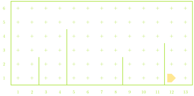
Algorithms
- The process of designing a solution strategy to a problem is called algorithmic design
- An algorithm is just an approach or recipe for a method to
solve a particular problem
- Frequently language agnostic
- Algorithms are not a new concept
- Euclid’s algorithm to find greatest common denominators for instance
- A large part of computer science is focused on the study or analysis of algorithms
Algorithm ⮕ Code
- You need to have an algorithm in place before you
can write the code to tell the computer what you want to do
- Imagine an alien asking me how to bake a cake. I need to understand the steps to baking the cake before I can even worry about the translation or communication
- Programming tools like conditional statements and loops will
frequently play a role in your algorithm, but as general concepts
- I can easily describe a loop to you without needing the exact syntax of Python
- The implementation of the algorithm is the act of translating it into Python (or whatever language you are using)
An Amazing Algorithm
- Consider a simple, loop-less, maze that we want to move through
- Karel could start anywhere
- The end of the maze is a beeper
- A common algorithm to get through the maze is to essentially always
follow or touch the wall to your right
- How could we phrase this in language Karel would understand?
- Let’s take the rest of class to work with a neighbor(s) to sketch
out your code
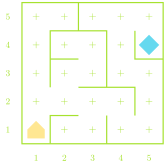